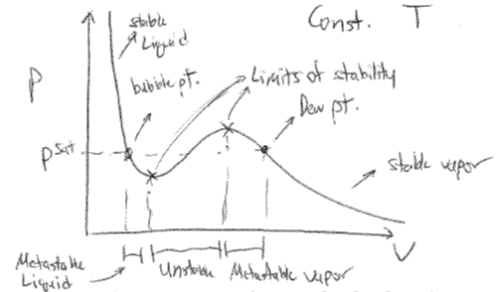
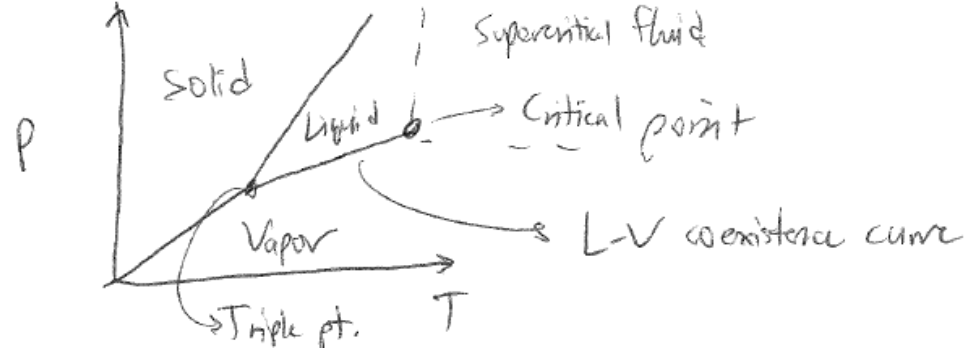
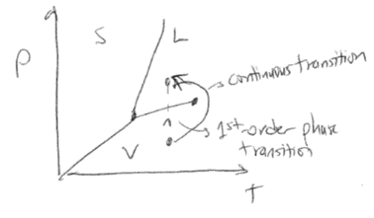

Phase Diagrams#
Recommended textbooks#
Tester and Modell, 7.1, 7.2, 8.4, 8.5, 15.1-15.2
Topics in this lecture#
Stable, metastable, and unstable states
Phase diagrams
Departure functions
Announcements#
Pset 5 due today, Pset 6 assigned and due next Thursday (Dec 5)
Final exam - EH 3024, 10 AM - 12 PM, Dec. 17
Stable, metastable, and unstable states#
In the last lecture, we derived two conditions for equilibrium in terms of the behavior of the entropy with respect to small perturbations in any of the \(n+2\) thermodynamic parameters describing a system:
The first criterion requires that the entropy reach an extremum at equilibrium while the latter requires that the entropy be a maximum at equilibrium (for an isolated system). To date, we have established phase behavior only by considering the first equilibrium criterion. Satisfying these two criteria identifies states that are stable with respect to small perturbations, but does not rule out the possibility that some states can be sensitive to large perturbations; such states are called metastable. We can thus classify stable, unstable, and metastable states according to the following:
Stable equilibrium states are defined such that any perturbation, large or small, will result in the system returning to the same initial equilibrium state. The corresponding thermodynamic potential is thus at a global maximum (for the entropy) or global minimum (for any other potential). Using notation for the entropy representation of the Fundamental Equation, for stable states \(\delta \underline{S} = 0\) and \(\delta^2 \underline{S} < 0\) with respect to any perturbation.
Unstable states are defined such that any perturbation, large or small, will result in the system reaching a different equilibrium state than its initial state. Unstable states have \(\delta^2 \underline{S} > 0\). Note that it is possible for \(\delta \underline{S} = 0\) and a state could be unstable; this would occur at a local minimum on an entropy landscape, for example.
Metastable states are defined such that any small perturbation will result in the system returning to the same initial equilibrium state, but a sufficiently large perturbation will result in the system reaching a new equilibrium state. Therefore, locally \(\delta \underline{S} = 0\) and \(\delta^2 \underline{S} < 0\) with respect to small perturbations, but not large ones. Equivalently, I could say that metastable states represent local minima on an energy landscape while a stable equilibrium state represents the global minimum.
 {width=”100%”}
{width=”100%”}
Metastability is an important concept in our understanding of phase behavior. For example, imagine we were cooling down liquid water to 0\(^\circ\) C, where we know thermodynamically the water should freeze. If we were to cool the liquid quickly (as opposed to infinitely slowly as we defined above) while carefully removing any impurities in the solution, we would find that we could cool the liquid well below the melting point before observing the formation of ice crystals. Such a liquid is supercooled and reaches metastable states where there is a global free energy minimum corresponding to the formation of the ice that is not reached because a sufficiently large perturbation has not occurred. Specifically, ice must form a nucleus to initiate continued growth into a large crystal; impurities can act as nucleation sites, as can large perturbations to the system. We could similarly heat up a liquid above its boiling point and find that the liquid can be superheated and maintain metastable states.
As noted above, we can define values of thermodynamic parameters for which metastability is possible by utilizing the stability criterion indicated above. Let’s now consider metastability for a \(PVT\) isotherm again, which we will describe in terms of the behavior of the Helmholtz free energy (which is a function of natural variables \(NVT\)) rather than the Gibbs free energy, only because of the way in which we plot \(PVT\) isotherms as a function of \(V\). While we will not prove this in class, satisfying the criterion of stability only requires that a single second-order partial derivative of a thermodynamic potential with respect to one of the \(n+2\) indepenently variable parameters is greater than zero, and thus it is sufficient to only examine this single second-order partial derivative. In particualr, the stability criterion can be written for the Helmholtz free energy with respect to the variations in the volume as:
Note that the Helmholtz free energy reaches a minimum and hence the inequality for the stability criterion enforces a local minimum. Additional information leading to this criterion is discussed in Chapter 7.1 and 7.2 of the Tester and Modell textbook. Also note that in class I misspoke - the equilibrium criterion for the Helmholtz free energy requires that \(\delta F = 0\), leading to the equivalence of intensive parameters between multiple phases as described in the last lecture. This condition does not require that all first-order partial derivatives of the Helmholtz free energy are zero - that is, \(\left ( \frac{\partial F}{\partial V}\right )_T = 0\) is not necessarily true for \(\delta F = 0\) to be true (nor did we invoke this condition when deriving equilibrium criteria). Again, see the notes in the last lecture for the definition of \(\delta F\).
We can simplify the stability crtierion slightly using the exact differential of the Helmholtz free energy to give:
This last relation shows that a single phase is stable if the slope of the \(PVT\) isotherm is negative. We can thus define new behavior on a PVT isotherm if we were expand or compress the system very quickly while carefully removing bubbles, impurities, defects, etc. First, we recognize that every point on the isotherm satisfies the equilibrium criterion for a single phase system. From the new stability criterion, we now see that if the slope of the isotherm is negative, then each point on the isotherm is also stable and hence can be observed. If we were to rapidly increase the pressure of the system from an initial low-pressure (vapor) state, we would see the volume decrease, as expected, but if the system were carefully prepared then we would not see the system form both a liquid and vapor region at the vapor pressure, as expected. Instead, because the derivative of the isotherm is negative, we would find that the initial vapor state is metastable for pressures higher than the vapor pressure since the isotherm obeys the criterion of stability. We could continue to increase the pressure up until a point where the slope becomes positive - the system then becomes unstable and rapidly splits into both a vapor and liquid phase and the pressure would either drop to the saturation pressure (if allowed to vary) or the system would spontaneously transform to the lowest free energy liquid state (if the pressure is fixed above the saturation pressure). Regardless, the main point is that the system can access a metastable region where at equilibrium the system would enter a two-phase region, but prior to equilibrium would be trapped in a metastable state corresponding to the state of aggregation in which the system started prior to the expansion/contraction. However, if the volume is increased/decreased such that the system reaches a limit of equilibrium, these points would be unstable and the system would immediately transition to form two states. Based on this analysis, we can then define the limit of stability, or the volume dividing stable from unstable states, as the points where \(\left ( \frac{\partial P}{\partial V} \right)_{N,T} = 0\).
{width=”80%”}
Phase diagrams#
We presented a single PVT isotherm on the plot above, but we could also draw a family of isotherms at different temperatures. Each isotherm would give rise to different dew points (or, alternatively, bubble points if the system was initially prepared as a liquid) corresponding to the pressure at which two-phase equilibrium is observed. The locus of dew and bubble points at various temperatures is called the phase envelope - points within the phase envelope correspond to vapor-liquid coexistence. The curve denoting the phase envelope is also called the binodal. The locus of points definining limits of stability is similarly called the spinodal; the region within the spinodal is unstable, and will also lead to the observation of two phases, while the region in between the binodal and spinodal is metastable and will only lead to two phases at equilibrium.
 {width=”80%”}
{width=”80%”}
As the temperature increases, the vapor pressure also increases (for reasons we will discuss on Pset 6). The molar volumes corresponding to the phases will also begin to approach each other - increasing the pressure will tend to condense the vapor phase, which is compressible, while increasing the temperature will tend to expand the liquid phase, which is largely incompressible and hence not affected strongly by the pressure. Eventually, the temperature will reach a point where at the vapor pressure the molar volumes of the liquid and vapor phases are identical - this is the critical point. The critical point represents the point at which the properties of liquid and vapor phases become indistinguishable from each other. A phase transition that passes through the critical point is then no longer a first-order transition as there is no longer a discontinuity in the volume. Such a transition is instead classified as a second-order, or continuous, phase transition. Second-order phase transitions have been studied at length and give rise to behavior such as the divergence of the heat capacity, which we saw on the simulation project, but we will not discuss them in much detail here.
Rather than look at isotherms as above, we can also plot phase diagrams as a function of \(P\) and \(T\), which is more typical since these parameters are controllable in the laboratory. An example is plotted below:
{width=”80%”}
The \(PVT\) isotherm drawn above would represent a vertical line on this diagram at fixed pressure. The boundary between two regions then represents the conditions of two-phase equilibrium - these lines are referred to as coexistence curves referring to the stable coexistence of two phases. Note that there is a point at which coexistence curves intersect; at this point, three phases can be in stable equilibrium, and as a result it is called a triple point. On these diagrams, the critical point represents the end of the liquid-vapor coexistence curve. If both the temperature and pressure are in excess of their values at the critical point, we can no longer distinguish between unique liquid and vapor states, and instead describe the resulting fluid as supercritical. The properties of a supercritical fluid range between those of a gas and liquid. Note that due to the presence of supercritical fluids, we can convert a system from a region that is fully vapor to a region that is fully liquid by first heating the vapor phase at low pressure to a temperature to the right of the critical point, increasing the pressure to the supercritical region, then decreasing the temperature to the liquid region to reach the same state as just increasing the pressure of the initial vapor. This pathway would convert a vapor to liquid without passing through a conventional first-order phase transition, and is possible because all points on the phase diagram are specified by state functions so that the path to reach them does not matter.
{width=”60%”}
Departure functions#
In the last lecture and leading into our discussion of phase behavior, we qualitatively described the \(PVT\) behavior of a material in the liquid/vapor state, and noted that such behavior could be quantified by a cubic equation of state. Clearly, the \(PVT\) behavior could not be described by an ideal gas equation of state because we need an equation of state that has multiple stable values of the volume for a single value of the pressure (at phase coexistence). Therefore, we need an approach to describe deviations from ideal behavior for real systems. One approach is to define a compressibility factor, denoted by \(Z\). The compressibility factor measures the deviation of the volume of a real gas/fluid from that of an ideal gas, and is defined as:
\(Z=1\) for an ideal gas, while the value is typically much lower for liquids (approx. 0.01-0.3 depending on the phase state of the fluid). \(Z\) can be determined from an equation of state if given, or from other approximations. A typical approximation for \(Z\) is the virial expansion, written as:
This expression is equivalent to a virial equation of state:
The virial expansion accounts for intermolecular interactions in a real gas through the virial coefficients \(B\), \(C\), etc. If \(B=C=\dots=0\), the equation reduces to the ideal gas equation of state. The parameter \(B\) (not the same as the general property described for the departure function definition above) is called the second virial coefficient and accounts for interactions between pairs of molecules. \(C\) is the third virial coefficient and accounts for three-body interactions, etc. This expansion is typically truncated at either second or third order since interactions between multiple gas molecules are unlikely. Virial coefficients (which can be predicted from statistical mechanics) are negative if interactions are attractive and positive if interactions are positive.
The compressibility factor is our first example of a parameter that captures the extent to which a system deviates from ideal behavior; in this case, it describes how a real fluid deviates from the behavior of an ideal gas. In general, we like to use ideal gases as reference systems because their behavior is mathematically easy to handle. For example, we know that the heat capacity of an ideal gas only depends on the temperature (from the equipartition theorem), while the heat capacity of a real gas may have a complicated pressure dependence. Since we need to know the heat capacity of a material (in addition to its \(PVT\) behavior) to calculate the chemical potential, it may be convenient to calculate the heat capacity (or other parameter) by defining changes to a reference ideal gas state.
Let us consider as an example the variation in some generic property \(B\) (where \(B\equiv H,G,S,U,\) etc.) of a real gas between two points in the \(T-P\) plane:
We might have an equation of state or compressibility factor for our system, but that alone may not be sufficient to tell us all changes in materials parameters (e.g. heat capacities) as we change both the temperature and pressure of the real gas. Instead, we can imagine a three-step pathway between these two points, recognizing that \(B\) is a state function so any paths will yield the same value of \(\Delta B\). Our path will first involve the isothermal change of state from \(T_1, P_1\) to an ideal gas reference state at the same temperature, then the change of the ideal gas reference state to \(T_2\), and finally the change from the ideal gas reference state to the real state at \(T_2, P_2\). A key point to recognize here is that there are no interactions between molecules in the ideal gas reference state, which can be reached in the limit that \(P\rightarrow 0\) or equivalently \(V\rightarrow \infty\) for a real gas. The ideal gas reference state therefore implies that \(P\rightarrow 0\) at the fixed temperature of interest. We can then write out the variations in \(B\) as:
 {width=”86%”}
{width=”86%”}
The advantage of this approach is again that temperature variations in \(B\) will generally be easier to calculate in the ideal gas state (\(P=0\)) than some other arbitrary state. Let’s consider this calculation if \(B\) is the entropy, and we assume that we know the equation of state of the system as a function of volume. We can write for this calculation:
We can use a Maxwell relation from the Gibbs free energy, \(\left ( \frac{\partial S}{\partial P}\right )_T = -\left ( \frac{\partial V}{\partial T}\right )_P\), to simplify the partial derivatives in the first and third integrals, and recognize the heat capacity in the second integral:
We can evaluate the temperature derivative given a \(PVT\) equation of state. We can integrate the second term over the temperature range of interest, but the first and third terms give issues. Specifically, a singularity will arise as \(P\rightarrow 0\) - we can see this if we consider for example the ideal gas equation of state, for which \(\left ( \frac{\partial V}{\partial T}\right )_P = \frac{R}{P}\). However, because we know that the system behaves like an ideal gas as \(P\rightarrow 0\), we can add and substract integrals of the ideal gas equation of state such that as \(P\rightarrow 0\) the integrand goes to 0. Specifically, we can write:
With this last expression, we eliminate the singularities in the first and third integrals because as \(P\rightarrow 0\) the ideal gas value of the partial derivative will cancel out with the real gas partial derivative. We now have a closed form method to calculate the change in \(S\) between any two states in the \(P-T\) plane if given an appropriate equation of state and ideal gas heat capacity.
The key to this approach is that we have defined three terms - the first and third represent the difference in the entropy between a real gas at pressure \(P\) and an ideal gas at pressure \(P\), or in other words the departure of the entropy of a real gas from that of an ideal gas at the same temperature and pressure. This idea of deviations from ideality is similar in spirit to the compressibility factors defined above. We generally refer to these terms which capture of departures from ideality as departure functions. For some generic property \(B\) (where \(B\equiv H,G,S,U,\) etc.) we can define the departure function for \(B\) in terms of two equivalent definitions depending on whether we first integrated with respect to pressure or temperature:
Here, \(B(T,P)\) and \(B(T,V)\) are the values of the property at a given temperature as a function of either volume or pressure and \(B^{0}\) is the corresponding property of an ideal gas at the same conditions; the \(0\) superscript indicates the ideal reference state. The choice of a volume-specific or pressure-specific departure function will largely depend on mathematical convenience, depending on if a system’s equation of state (or compressibility factor) is more easily integrated as a function of \(P\) or \(V\). Referencing the same formalism as above, we can then write the three-step path through phase space in terms of the departure function as:
The first and third terms represent the departure functions and the second term represents the variation of the property in an ideal gas state. Following a similar framework as for the entropy above, we could then derive departure functions for various properties. Here, we will present several departure functions as a function of pressure, and are written in terms of the compressibility factor as is common:
Using departure functions thus provides a mathematically convenient way to compute property changes between any two points in \(PT\) space while always computing isobaric paths for an ideal gas state for which materials parameters can be readily tabulated.